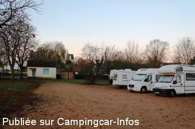
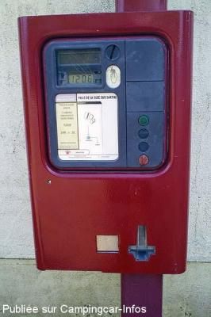
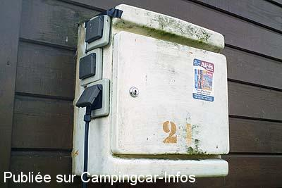
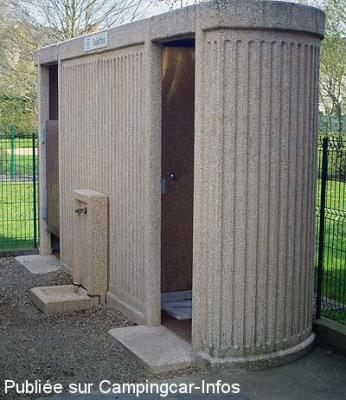
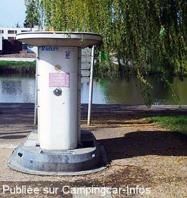
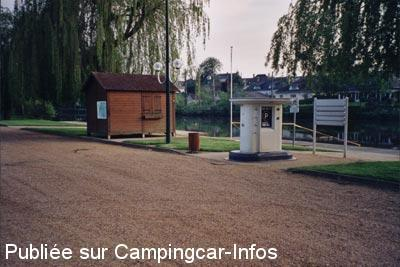

ASN = Aire de services avec stationnement nuit possible de :
LA SUZE SUR SARTHE
(N° 203)
Accès/adresse :
Ruelle du Port Rue du Camping
72210 LA SUZE SUR SARTHE
72210 LA SUZE SUR SARTHE
Latitude : (Nord) 47.88923° Décimaux ou 47° 53′ 21′′
Longitude : (Est) 0.03072° Décimaux ou 0° 1′ 50′′
Tarif : 2014
Stationnement, services : 5 €
Type de borne : RACLET
Services :


Tous commerces
Autres informations :
Ouverte toute l'année
Pas de services en période hivernale
10 emplacements
Vidange eaux grises située à plus de 30cm du bord C-C et collecteur de 30x30
Tel : +33(0)243 773 049
contact@ville-lasuze.fr
http://www.ville-lasuze.fr

Le 25/12/2013 par chtigus

Le 02/04/2011 par saosnois-72

Le 02/04/2011 par saosnois-72

Le 02/04/2011 par saosnois-72

Le 02/04/2011 par saosnois-72

Le 10/02/2007 par Fama80
de
brigitte et pascal de la somme
le 18/09/2014 :
De passage début septembre pour la premiére fois ,bel endroit trés proche du centre ville ,avec toutes les commodités sur l aire .
Merci a la commune
Nous reviendrons avec grand plaisir .
De passage début septembre pour la premiére fois ,bel endroit trés proche du centre ville ,avec toutes les commodités sur l aire .
Merci a la commune
Nous reviendrons avec grand plaisir .
de
chtigus
le 25/12/2013 :
aire très bien située, accueil sympathique de la commune,pas d'eau en hiver,tarif 5€ pour 24h
aire très bien située, accueil sympathique de la commune,pas d'eau en hiver,tarif 5€ pour 24h
de
ser27
le 08/05/2013 :
nous nous y arretons tres souvent,expressement le jeudi,pour le grand marché, commercants sedentaires tres acceuillant, specialiste de la rillette, sans oublier le coiffeur ,tres bel endroit ,tous services pour 5€ ,merci a la municipalité
nous nous y arretons tres souvent,expressement le jeudi,pour le grand marché, commercants sedentaires tres acceuillant, specialiste de la rillette, sans oublier le coiffeur ,tres bel endroit ,tous services pour 5€ ,merci a la municipalité
de
Mairie de La Suze
le 26/04/2013 :
La Mairie de La Suze vous informe que l'aire de camping-cars est ouverte, accès par le port uniquement.
Le pont reste coupé à la circulation donc suivre la déviation Cordialement La Mairie de La Suze sur Sarthe
La Mairie de La Suze vous informe que l'aire de camping-cars est ouverte, accès par le port uniquement.
Le pont reste coupé à la circulation donc suivre la déviation Cordialement La Mairie de La Suze sur Sarthe
de
pauman
le 09/04/2013 :
de passage fin mars,temps frois, endroit agréable resté une journée édemi 5 € la nuit électicité comprise,dommage que certains camping caristes utilisent des chauffages electriques et font disjoncter l'installation,l'employé municipale n'était pas comptant et cela pénalise tout le monde et cela risque d'être suprimé à l'avenir.
de passage fin mars,temps frois, endroit agréable resté une journée édemi 5 € la nuit électicité comprise,dommage que certains camping caristes utilisent des chauffages electriques et font disjoncter l'installation,l'employé municipale n'était pas comptant et cela pénalise tout le monde et cela risque d'être suprimé à l'avenir.
de
pivoine
le 08/11/2012 :
Sommes passés le 6 novembre. Aire toujours à 3€ avec branchement électrique si prise disponible.
Stationnement sur sol en gravillons.Merci à la commune
Avons déjeuné à la crêperie "La Fleur de Sel". Très bonne impression : rapport qualité/prix difficile à battre. Accueil sympathique.
Elle n'est pas au centre, mais tourner à droite en sortant de l'impasse, puis trottoir de gauche (volets bleus).
A conseiller.
Sommes passés le 6 novembre. Aire toujours à 3€ avec branchement électrique si prise disponible.
Stationnement sur sol en gravillons.Merci à la commune
Avons déjeuné à la crêperie "La Fleur de Sel". Très bonne impression : rapport qualité/prix difficile à battre. Accueil sympathique.
Elle n'est pas au centre, mais tourner à droite en sortant de l'impasse, puis trottoir de gauche (volets bleus).
A conseiller.
de
Didier van der Haeghen
le 02/04/2011 :
§
La borne Raclet est située sur le port et non dans l'aire.
Pour le 220 volts, il faut se brancher sur le boitier gris situé derriére la guéritte (6 prises 3 pôles normale). Tarif 2011 tois euros pour 24 H.Soyez prévoyant en longueur de cable 220 volts !
mini 20 mètres, maxi 80 métres, sinon . . .
§
La borne Raclet est située sur le port et non dans l'aire.
Pour le 220 volts, il faut se brancher sur le boitier gris situé derriére la guéritte (6 prises 3 pôles normale). Tarif 2011 tois euros pour 24 H.Soyez prévoyant en longueur de cable 220 volts !
mini 20 mètres, maxi 80 métres, sinon . . .
de
Mataf 59
le 04/10/2010 :
Nous y avons passé 2 jours sous un beau soleil! Super endroit. Merci à la commune.
Nous y avons passé 2 jours sous un beau soleil! Super endroit. Merci à la commune.
de
migrateur 77
le 24/09/2010 :
Sommes passés et avons trouvé de la place sur cette aire effectivement très accueillante. Si accueillante que certains s'y installent pour plusieurs jours.
Recommandons également la crêperie "La Fleur de Sel" que l'on trouve en tournant à droite au bout de la rue et en empruntant le trottoir opposé. Bonne qualité et patron accueillant.
Sommes passés et avons trouvé de la place sur cette aire effectivement très accueillante. Si accueillante que certains s'y installent pour plusieurs jours.
Recommandons également la crêperie "La Fleur de Sel" que l'on trouve en tournant à droite au bout de la rue et en empruntant le trottoir opposé. Bonne qualité et patron accueillant.
de
Bruno M
le 18/08/2010 :
Passage pour une nuit, étape parfaite. L'aire était pleine, mais nous avons eu l'autorisation du camping pour nous placer à l'extérieur, en bordure de l'eau.
J'ai modifié légèrement les coordonnées GPS pour indiquer l'entrée de la rue du camping, plutôt que l'emplacement précis de l'aire, car mon GPS (Tomtom) ne connait pas cette rue et du coup, voulait nous emmener dans la rue qui lui semblait la plus près... de l'autre côté du cours d'eau !
Passage pour une nuit, étape parfaite. L'aire était pleine, mais nous avons eu l'autorisation du camping pour nous placer à l'extérieur, en bordure de l'eau.
J'ai modifié légèrement les coordonnées GPS pour indiquer l'entrée de la rue du camping, plutôt que l'emplacement précis de l'aire, car mon GPS (Tomtom) ne connait pas cette rue et du coup, voulait nous emmener dans la rue qui lui semblait la plus près... de l'autre côté du cours d'eau !
de
pataille
le 22/08/2008 :
Aire très très propre, ombragée si on le désire et accueillante et pour 3 € on fournit même le courant. Que demander de plus?
Aire très très propre, ombragée si on le désire et accueillante et pour 3 € on fournit même le courant. Que demander de plus?
de
le 05/09/2006 :
Obligation de payer 3€ pour 24h même si on reste 2 heures ou simplement la nuit. Et le monnayeur ne prend que 3€ pas plus, pas moins et ne rend pas la monnaie!
Beau site, mais vaut mieux se garer sur le terrain derrière les WC que sur le parking devant face à la Sarthe, des jeunes y passent la soirée. Sans rien de mal mais à discuter, bruit de scooters, voitures.
Obligation de payer 3€ pour 24h même si on reste 2 heures ou simplement la nuit. Et le monnayeur ne prend que 3€ pas plus, pas moins et ne rend pas la monnaie!
Beau site, mais vaut mieux se garer sur le terrain derrière les WC que sur le parking devant face à la Sarthe, des jeunes y passent la soirée. Sans rien de mal mais à discuter, bruit de scooters, voitures.